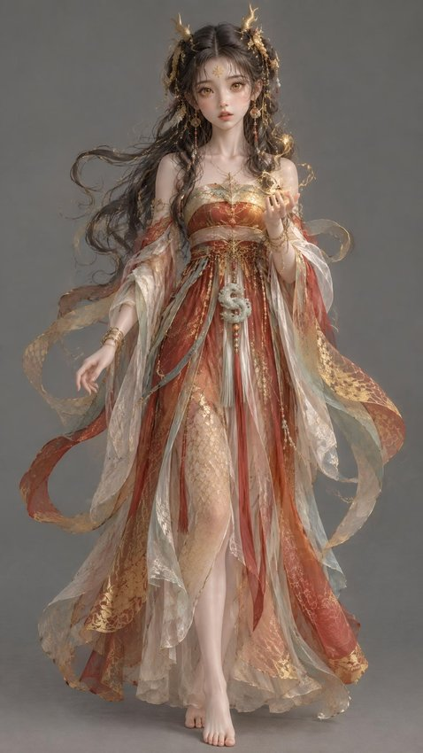

云阙旅人
已集 2 片龙鳞 · 走过 2 处
2
龙鳞
2
集章
0
数藏
龙鳞集章
七鳞聚齐 · 云阙归愿
2 / 7
启程鳞
丹凤门
朝会鳞
含元殿
廊下鳞
宣政殿
召对鳞
紫宸殿
池苑鳞
太液池
盛宴鳞
麟德殿
归愿鳞
玄武门
景点巡游
已到访 2 处宫殿
西安
大明宫国家遗址公园
千宫之宫 · 七阙长卷
已到访 2/7 处
可巡游
西安
大雁塔文化景区
大慈恩寺 · 玄奘译场
尚未到访
即将上线
我的
意向 · 预约 · 收藏
意
我的意向单
预售与意向登记 · 优先通知
›
体验预约
›
史料卡收藏
›
我的祈愿分享
›
关于长安云阙
›
重置巡游进度